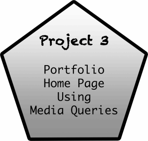

Projects
Upcoming Project's Progress
Complete
This project involved learning how to create a portfolio homepage using media queries to adjust to different screen sizes such as mobile, tablet and desktop displays. While doing this project, I was familiar with creating web pages using html code and css but using media queries on the css style sheet was new to me. So, it was challenging at first but I caught on fairly quickly as I practiced more with the queries.
Project 4 Resume Using Skeleton
Complete
This project involved using my existing resume and incorporating it into the Skeleton CSS responsive boilerplate. I was able to achieve this project with ease using the techniques that I learned in the previous project. Also, the boilerplate that I downloaded had the majority of the basic Skeleton and responsive code for the columns as well as adjusting to display for different screen sizes. Thus making it convenient to add additional html and css code.
Project 5 Bootstrap Website
Complete
Project 6 Sass
Pending
Project 7 Industry Exploration
Pending
Project 8 Git Repository
Pending